Stugun
Lat: 63.172877
Long: 15.580845
Allmänt
Detta är Jämtlands populäraste klätterberg. Berget ligger bara några stenkast från byn Stugun.
Klippan består av flera olika bergarter. Mest är det finkornig granit, men det finns ställen, t.ex. Vita Väggen, som består av kvartsit. På andra ställen liknar klippan sandsten.
Stora Berget
Denna vägg är ca 80 m hög. Genomsnittslutningen är inte mer än 60-70 grader. Klippans ytstruktur varierar, men ofta är den ojämn och består av framvittrade knoppar och rundade kanter med god friktion. Detta gör att vägg- och småstegsklättring dominerar på många leder medan ren friktionsklättring är mindre vanlig än det vid första anblicken ser ut.
Säkringsmöjligheterna är ibland "sparsamma", men oftast acceptabla. Undantag finns dock, vilket framgår av ledbeskrivningarna.
Vägbeskrivning
Kör Sollefteå-vägen till Stugun.
Kommunikationer:
Utmärkta bussförbindelser Östersund-Stugun och så en kilometers promenad fram till berget. Eller med bil ända fram. Ta i så fall till vänster omedelbart efter bron. Åk därefter upp efter älven någon kilometer och ta till höger vid skylten Stuguberget. Stigen upp till berget börjar till vänster om jordkällaren.
Access
Väggar och leder
Översikt
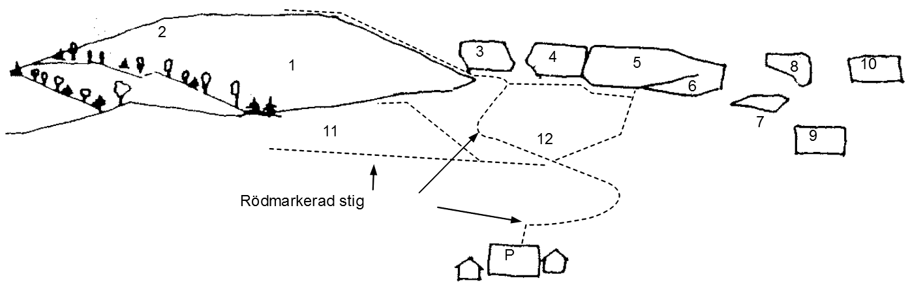
1.
Stora berget
2.
Plattan
3.
Musväggen
4.
Bräsväggen
| width="230px" |
5.
Lilla berget (även kallad fikahyllan)
6.
Vita väggen
7.
Film 2-väggen
8.
Glömda väggen
9.
Väggen i skogen
10.
Gömda väggen
11.
Vindskydd, toalett
12.
Vindskydd, stuga, toalett
|}
Stora berget, del 1
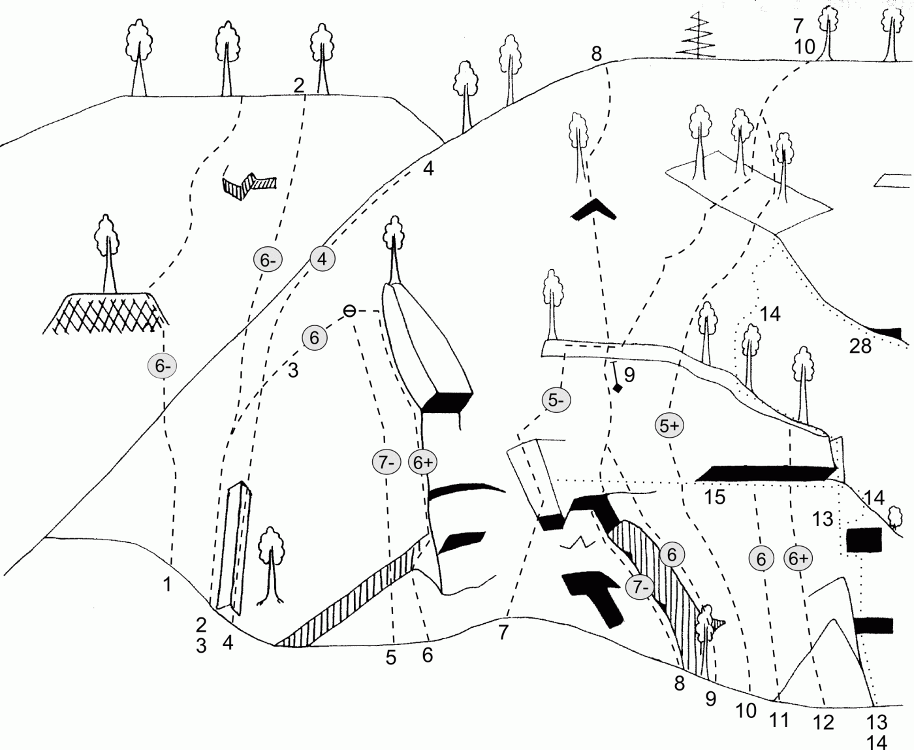
- 1
- Risken finns
- 6-
- '''1. 5 20m''' Klättra sprickan upp till tallen och enbusken.<br>'''2. 6- 40m''' Gå upp i hörnet till vänster. Undvik taket genom att gå ut på kanten till vänster. Fortsätt upp i sprickan över nästa tak (krux) och vidare i sprickan till hyllan.<br>'''3. 5 20m''' Klättra upp till ett tak och ut till höger i sprickan. Följ den upp till standplatsen.
- 2
- Laserdance
- 6-
- Gå upp i en ränna något till vänster för att nå leden. Klättra därefter plattan upp mot en brantare vägg som är kruxet. Borrbult. Traversera något åt höger och vidare upp mot toppen.
- 3
- Elvis
- 6
- Från ''Laserdance'' mot ''Sorrys utsteg''. Ojämn.
- 4
- Jag visiterar
- 4
- Hörn och stor spricka till höger om ''Lacerdance''. Mix?
- ?
- ?
- ?
- Börjar till höger om'' Jag visterar'' och sedan rakt upp med dragning åt höger.
- 5
- Pappa ledig
- 7-
- Leden går till vänster om ''Sorry'' rakt upp över överhänget till samma ankare som'' Sorry''.
- 6
- Sorry
- 6+
- Fin led till vänster om ''Slem-Olas Rute''. Krux över märkligt hörn/tak.
- 7
- Slem-Olas rute
- 5-
- Detta är en led, som i likhet med några andra av de äldre lederna nästan blivit bortglömd. Kanske beror det på det föga tilltalande namnet. Kanske på det undangömda läget långt till vänster på väggen. Hur som helst så erbjuder den fin och varierande klättring och är väl värd besväret av den lite krångliga anmarschen. Detta är den enda lätta leden mellan de stora taken på vänstra delen av berget. Den börjar 15 m till vänster om ''Åtlåten''.<br> '''1. 5- 45 m''' Börja med en ramp, som går åt höger. Sedan upp över ett litet tak och in i en fin spricka. Följ sprickan en bit för att sedan gå över åt höger till hörnet. Fortsätt upp i hörnet och ut på en hylla till höger. Därefter vidare upp på nästa hylla. Klättra sedan upp på en ramp åt vänster till en spricka. Följ sprickan tills den slutar. Fortsätt sedan med väggklättring upp till tallen.<br> '''2.''' Gå på hyllan bort till kaminen. Gör utsteget på ''Myrsten'' eller ''Åtåten''.
- 8
- Åtåten
- 7-
- 1:a replängden bjuder på superb och ihållande klättring. Den 2:a är ojämnare, men innehåller ett mycket svårt krux. Denna replängd kan lätt kringgås. Leden börjar ca 30 m till vänster om ''Myrsten'' i ett stort hörn under det stora taket.<br>'''1. 6 45m''' Börja med en avig lay-back uppför det stora hörnet, som lutar åt vänster. Gå ut under taket, som är lättare än det ser ut, och upp i sprickan, som sedan fortsätter något tunnare uppför väggen till hyllan.<br>'''2. 7- 30m''' Klättra från tallen rätt upp i ett tunt hörn. Följ det upp till ett trekantigt tak. Gå över det och upp i sprickan.
- 9
- Dansk fylletant
- 6
- Mycket luftig led på kanten ovan ''Åtåten''.
- 10
- Mr Beam
- 5+
- Fin väggklättring med pelare på slutet.<br>'''1. 5+ 45m''' Väggklättring och friktion. Friends och småkilar är bra att ha. <br> '''2. 5 30m''' Klättra pelaren upp mot toppen. <br>'''3. 5+ 10m''' Följ sprickan ända upp.
- 11
- Milda makter
- 6
- Klättra den tunna sprickan till höger om '''Åtåten'''. När sprickan delar sig följer man den vänstra upp till ''Vänsterextremisten''. Fortsätt rakt uppför väggen någon meter. Klättra sedan åt höger och upp mot hyllan.<br>'''1. 45m''' Säkras med en hel del små kilar.<br>'''2. 35m'''
- 12
- No name
- 6+
- Tunn väggklättring med takkrux.
- 13
- Direkta myrsten
- 5+
- Samma insteg som'' Myrsten''. Fortsätt rakt upp, där'' Myrsten'' gör en travers åt höger på 1:a replängden.
- 14
- Myrsten
- 4+
- Här står Stora Bergets ”vagga” vad beträffar klättring. Med denna led utfördes nämligen den första genomklättringen av berget över huvud taget. Det är nog också ledens enda merit och den klättras följdriktigt sällan eller aldrig numera.<br>1:a replängden bjuder på hyfsad klättring, men resten håller lägre standard. Den rekommenderas alltså inte för klättringens skull, men man kan ju alltid leta efter vaggan. Leden börjar vid en jättestor skiva, som vilar mot berget.<br>'''1. 4+ 30m''' Gå från toppen av skivan upp till det vänstra hörnet. Undvik taket genom att kliva ut på kanten till vänster. Lay-backa på runda tag i takets vänstra kant ett par meter uppåt till en liten hylla. Traversera åt höger ut på väggen några meter och klättra sedan rakt upp över denna (svårsäkrat) till en hylla.<br>'''2. 3 30m''' Gå till vänster över hyllan fram till hörnet vid dess vänstra kant. Klättra hörnet och sedan vidare på hyllor till en stor tall.<br>'''3. 3 40m ''' Fortsätt upp i kaminen och så fram till hörnet. Klättra hörnet i 20 m. Gå sedan ut till höger på en hylla.<br>'''4. 3+ 20m '''Fortsätt från högra kanten av hyllan rätt upp. Sedan åt vänster till hörnet. Fortsätt i hörnet upp till hyllan.<br>'''5. 3 40m '''Gå rätt över hyllan och upp i sprickan till spetsen av skivan. Fortsätt upp på plattan till toppen. Istället för att klättra denna replängd kan man trassla sig upp mellan träden. <br><u>''Variant på replängd 3 och 4.'' </u> <br>'''3a. 3 40m''' Klättra kaminen. Fortsätt åt höger förbi det första hörnet. Gå under skivan till nästa hörn. Följ det i 20 m. <br>'''4a. 3 20m ''' Gå till höger och upp i de båda hörnen till hyllan.
- 15
- Vänsterextremisten
- 4+
- Från första standplatsen på'' Myrsten'', traversera åt vänster i sprickan till '''Slem-Olas rute'''.
Stora berget, del 2
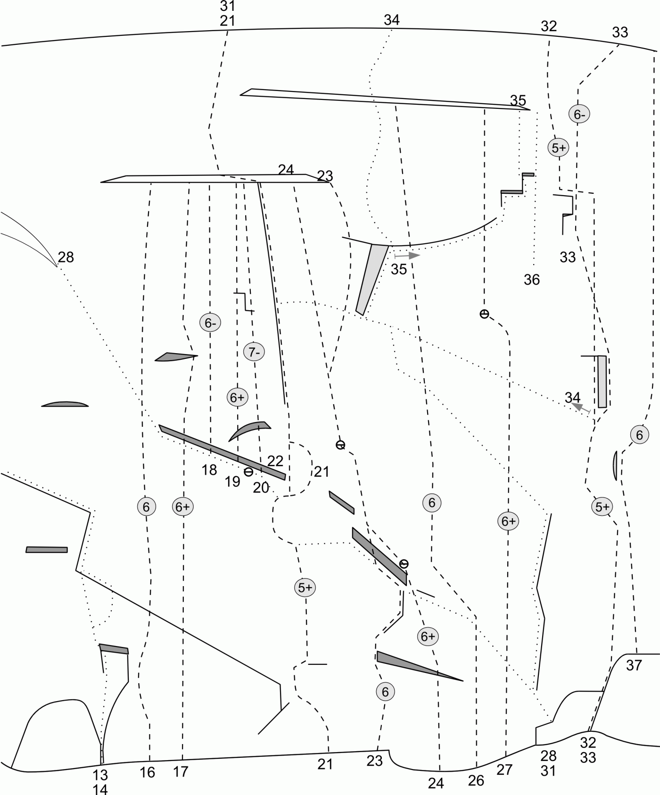
- 16
- Sverige
- 6
- '''1. 45m''' Ena bulten lite skadad från ett stenras <br>'''2. 35m'''
- 17
- Finland
- 6/6+
- ''1. 5+''' Repan avslutas med ett ankare bestående av två bultar (ej utritat).<br>'''2. 6/6+''' Större delen av repan har grad 5+. Vid toppen används ett träd för säkring.
- 18
- Ellens led
- 6-
- Fin väggklättring.
- 19
- Smurfleden
- 6+
- Börja med att klättra t.ex. första replängden av Mette mera upp till standplatsen. Gå från hyllan åt vänster. Undvik taket genom att klättra rakt upp från tallen. Fortsätt därefter åt vänster med fötterna på takläppen. Luftigt. Följ sedan den tunna sprickan, ett kort hörn och så upp över det lilla överhänget som är kruxet på leden. Därefter följer ihållande väggklättring rakt upp till ett hörn med en fin spricka. Klättra hörnet och passera det påföljande taket på vänster sida. Fortsätt rakt upp mot ett rundat hörn. Klättra hörnet och vidare upp mot den stora hyllan.
- 20
- Lorry
- 7-
- Startar efter'' Mette meras'' första replängd
- 21
- Mette mera
- 5+
- Detta anses av många vara Stora Bergets finaste led. Den är lång och med ihållande klättring hela vägen. Den 1:a replängden består mest av inte så brant, men tunn och ganska svårsäkrad väggklättring. De sista 5 meterna är brantare och innehåller en ovanlig passage strax före standplatsen. Den 2:a replängden domineras av ledens, och kanske hela bergets, största attraktion. Det är ett 40 m långt hörn med en ovanligt jämn och fin spricka. Leden börjar rakt under den gula fläcken på ''Öneväggen''. <br>'''1. 5 40m '''Klättra först 2 m rätt upp. Traversera därefter till vänster upp på den lilla hyllan. Gå sedan åt höger några meter och fortsätt upp i ett tunt hörn. Traversera därefter åt vänster på en list. Klättra sedan sprickan, som leder upp mot björken. Klättra något åt vänster och sedan med försiktighet rakt upp över det sönderspruckna partiet. Fortsätt vidare uppför den branta väggen och avsluta med en delikat ”mantle-shelf”. <br>'''2. 5+ 45m '''Ta några steg åt höger och sedan upp i det välvda hörnet. Fortsätt över skivorna åt vänster mot björken och upp i hörnet till den stora hyllan. Fin standplats till höger ut på kanten, med utsikt över hela 2:a replängden. Det går att göra en flott och luftig variant i början på replängden,'' Mette ännu mera''. <br>'''3. 5 15m '''Gå över hyllan och in i hörnet. Fortsätt upp i hörnet till toppen.
- 22
- Mette ännu mera
- 6+
- Klättra rakt upp från standplatsen mot hörnet i den tunna sprickan. Svår balanslay-back.
- 23
- La det skutte
- 6
- '''1. 6 25m '''Leden börjar rakt under den vänstra kanten av det långa taket. Klättra rätt upp via skivan mot det lilla hörnet och taket. Kliv ut genom taket åt vänster. Krux. Fortsätt sedan åt höger upp i det liggande hörnet och mot det kupiga hörnet i högra kanten av taken. Klättra hörnet. Härliga grepp ute på högra kanten. Gå sedan åt vänster för att nå den fina sprickan i nästa tak. Följ sprickan upp och åt vänster. Kliv upp på nästa hylla och gör standplats. <br>'''2. 5+ 40m '''Fortsätt rakt upp över väggen och in i ett hörn. Följ hörnet och därefter vidare rakt upp till en borrbult. Traversera ett par meter åt vänster. Fortsätt sedan rakt upp ett tjugotal meter och därefter något åt höger mot en tunn, fin spricka till vänster om Jochen. Följ sprickan upp till nästa hylla. <br>'''3. 5- 15m '''Klättra den korta väggen förbi borrbulten. Avsluta sedan antingen med Jochens utsteg, eller med att gå åt vänster på hyllan och klättra utstegskaminen på Mette Mera.
- 24
- Red boys with red tails
- 6+
- Gjordes ursprungligen i 3 replängder men det rekommenderas att klättra den i 2 replängder. Leden är även känd under namnet ''Stefans led''.<br>'''1. 6+ 45m''' Kruxet är väggklättringen efter ankaret som man inte använder som standplats. Standplats på en liten hylla (30x100 cm).<br>'''2. 35m'''
- 25
- Midnatts dubbelgångaren
- 6-
- Börja på'' Isabelles'' 1:a replängd och vik vänster vid första borrbulten.
- 26
- Isabelle
- 6
- Bitvis runout varning på leden.<br>'''1. 6 50m '''Klättra väggen upp mot en skiva och en tunn spricka. Fortsätt uppför sprickan och sedan åt vänster över ett lättare parti mot ett svängt, svagt utbildat hörn. Klättra hörnet åt höger och därefter vidare åt höger mot en ljus platta. Klättra över plattan. Krux. Vidare rakt upp i ett litet hörn mot en tall.<br>'''2. 6- 40m '''Från tallen rakt upp mot toppväggen och ett litet tak. Passera taket åt vänster och vidare uppåt med dragning åt vänster. Klättra sedan åt höger igen och avsluta med att klättra rakt uppför det sista branta partiet. Standplats på hyllan. Man kan sedan klättra den korta väggen ovanför hyllan eller gå runt åt vänster.
- 27
- Onda ögat
- 6+
- Mycket fin och välsäkrad klättring på bergets högsta del. <br>'''1. 6- 48m'''Fin väggklättring med kruxet på slutet. <br>'''2. 6+ 32m''' Lätt i början upp till taket som är kruxet. Med några delikata rörelser fixar man det och fortsätter mot toppen.
- 28
- Önevägen
- 5-
- Denna led klättras sällan numera. Den tillhör inte bergets största attraktioner. Klättringen är bitvis bökig och med partier av lösare klippa. På ett ställe passerar man i ett obehagligt läge under lösa block. På plussidan är kanske den originella linjeföringen, en diagonal travers från fot till topp på berget, som gör den till Stora Bergets längsta led. <br>'''1. 4 30m '''Leden börjar på samma ställe som Spinning wheel. Traversera rakt åt vänster på ett par små hyllor. Runda bullen. Korsa ''Ho chi minh leden'' och fortsätt ca 15 m åt vänster på fina små hyllor. Gå ner under ett stort block. Standplats vid en tall. <br>'''2. 5- 30m '''Fortsätt åt vänster till en skiva. Klättra denna upp till ett överhäng. Traversera åt vänster under överhänget förbi en liten björk och sedan lite neråt under lösa block bort mot en tall. Klättra därefter rakt upp via en tunn ”misstänkt” skiva och vidare på något lösa grepp till en liggande tall. Krux. Tveksam säkring i den tunna skivan.<br>''Det finns två varianter på den här replängden; ''Öneväggen'' och ''Omvägen''.''<br>'''3. 5- 30m '''Från tallen åt vänster under taken (bitvis bökigt) och upp i en stor spricka. <br>'''4. 4 20m''' Vidare åt vänster under taken och, med en liten ålning, upp i hörnet och vidare upp på hyllan. Här kan man antingen trassla sig upp mellan träden eller klättra en replängd till. <br>'''5. 3 30m '''Gå något till vänster och klättra upp i sprickan och fortsätt uppför plattan.
- 29
- Öneväggen
- 6-
- Klättra skivan i början på 2:a replängden av ''Önevägen''. Klättra därefter rakt upp och traversera på känsliga steg över väggen, bort över hyllan.
- 30
- Omvägen
- 6-
- Börjar vid första standplaten av ''Önevägen''.<br>'''1. 5+ 10m''' Klättra rätt upp från standplatsen och gå till höger under taket. Här har man fördel av att vara kort. Gå över taket i en fin spricka och upp till en liten hylla.<br>'''2. 6- 15m''' Fortsätt över den lilla plattan och ner runt hörnet. Klättra därefter via ''Öneväggen'' bort till den liggande tallen.
- 31
- Ho chi minh leden
- 5+
- Leden börjar något under och till vänster om ''Spinning Wheel.'' Man kan också använda de 25-30 första meterna av leden som en lättare instegsvariant till ''Spinning Wheel.'' Man traverserar isåfall åt höger vid toppen av hörnet i början av 2:a replängden. <br>'''1. 5- 15m'''Traversera åt vänster över väggen till hörnet. Följ sedan hörnet upp till hyllan och björken.<br>'''2. 5+ 40m '''Fortsätt upp till hörnet. Gå, där hörnet slutar, åt vänster över väggen. (Krux. Långt till närmaste mellansäkring.) Fortsätt till nästa hörn. Klättra det några meter för att sedan gå till vänster igen mot den stora tallen.<br>'''3. 5 15m '''Gå något till vänster och upp i ett litet hörn till den tunna skivan. Följ skivan och gå fram till hörnet.<br>'''4. 5 40m '''Runda hörnet till vänster och traversera vidare lite neråt till nästa hörn. Följ det upp till en stor hylla. En luftig och fin standplats kan göras åt höger ut på kanten. <br>'''5. 5+ 10m '''Gå rätt över hyllan och välj mellan den stora eller lilla sprickan upp till toppen.
- 32
- Spinning wheel
- 5+
- Detta är Stugubergets verkliga klassiker. Namnet anspelar på den teknik som tillämpades på de svårare svapartierna vid premiärturen. Med denna led gjordes den första genomklättringen av Stora Bergets kompakta centralparti. Leden förblev under något år extremklättrarens ”examensprov”. Numera tävlar den med ''Röde Orm'' om att vara Stora Bergets oftast klättrade led. Bra säkrat där det behövs. Ett litet frågetecken dock för bladbulten, som sitter som enda säkringsmöjlighet vid en känslig passage mot slutet av första replängden. Insteget hittar man på en hylla rakt under bergets högsta punkt. <br>'''1. 5+ 45m''' Starta vid en av tallarna på hyllan. Klättra en flakformation ca 5 m upp till en smal hylla. Fortsätt i den tunna sprickan (krux) ca 10 m upp till en skiva. Runda skivan på höger sida och fortsätt till en ramp. Följ denna snett upp åt vänster till en hylla. Klättra från högra kanten av hyllan upp i det grunda hörnet till en borrbult. Kliv upp på hyllan till höger (lite avigt) och gå vidare åt höger på denna tills den vidgar sig. Standplats vid hyllans övre vänstra hörn. <br>'''2. 5- 40m '''Replängden består mest av 3:a klättring. Graden 5- gäller en kort passage mot slutet av replängden. Fortsätt rakt upp i hörnet, eller runda skivan åt vänster. Följ sedan kanten och gå därefter in på högra väggen och senare upp på en hylla till vänster. Därifrån fortsätter man med en lätt kraftansträngning upp på hyllan till höger.<br>'''3. 5 30m '''Från standplatsen rätt upp på nästa hylla. Gör därefter en travers åt vänster. (Här bör man lägga en kil så högt som möjligt, för att hjälpligt säkra påföljande passage upp över plattan.) Ta ett kliv vidare åt vänster över en luftig passage ut på en hylla ovanpå ett stort överhäng. Klättra över plattan snett upp åt höger. (Svårsäkrat.) Fortsätt därefter med någon dragning åt vänster upp till en långsmal hylla (tveksamt säkrad). Gå på denna åt vänster till hörnet. Klättra hörnet och kliv upp till vänster.
- 33
- Direkt utsteg spinning wheel
- 6-
- Gå från andra standplatsen på ''Spinning Wheel'' rakt upp och avsluta med ett hörn som är kruxet.
- 34
- Jochen
- 5
- Detta mycket fina lay-back hörn är en vanlig och fullt ”konkurrenskraftig” utstegsvariant till ''Spinning wheel'' och ''Ho chi minh leden''. Klättra första replängden på ''Spinning wheel'' och därefter en travers åt vänster förbi en liggande tall, ett block, ner under en tunn skiva, som kallas ''Bünnlüppen''. Därefter vidare upp på hyllan och bort till hörnet. Traversen är 30 m lång och inte svårare än 5-. ''Ho chi minh leden'' har standplatsen efter 3:e replängden gemensam med ''Jochen''. Klättra hörnet ca 10 m och kliv upp på hyllan till vänster. Fortsätt uppför väggen några meter till nästa stora hylla. Kliv upp på en skiva vid hyllans högra kant. Fortsätt med ”sparsamt” säkrad 4:a-klättring ca 15 m rakt uppför väggen till toppen.
- 35
- Moster Olgas utmaning
- 5+
- En vacker och luftig led som går över två på varandra följande rätvinkliga tak. Denna led kan med fördel kombineras med ''Spinning wheel''. Den är dock aningen svårare och seriösare än ''Spinning wheel''.<br>'''1. 4+ 15m '''Gå från toppen av hörnet på Jochen åt höger under det lilla taket och bort tillen fin tall.<br>'''2. 5+ 30m '''Klättra det vänstra hörnet upp till taket. Gå ut till höger och upp i nästa hörn. Ta sedan till vänster under taket och ut på kanten. Följ sedan sprickan med dragning åt vänster. Pass upp för repdrag. Lägg något i sprickan längst ut på takläppen.<br>'''3. 5 10m '''En något kruxing spricka leder upp mot hyllan där man får en fin standplats.
- 36
- Arreten
- 6
- Leden följer arêten till höger om ''Moster Olgas Utmaning''. Starta från den stora hyllan med flera träd. Börja med att klättra ett knepigt hörn för att sedan följa den högra väggen på arêten ända upp.
- 37
- Oktober galaxen
- 6+
- Höger om ''Spinning Wheel''.<br>'''1. 6-''' <br>'''2. 6+'''
- 38
- Kruppskaja
- 6
- '''1. 6- 40m '''Starta med en tunn spricka 10 m till höger om insteget på ''Spinning Wheel''. Fortsätt där sprickan slutar något åt vänster och sedan vidare rakt upp på runda grepp och steg mot tallen. <br>'''2. 4+ 25m '''Gör en kringgående rörelse åt höger och därefter rakt upp mot en borrbult.<br>'''3. 6 25m ''' Klättra den branta toppväggen rakt upp.
Stora berget, del 3
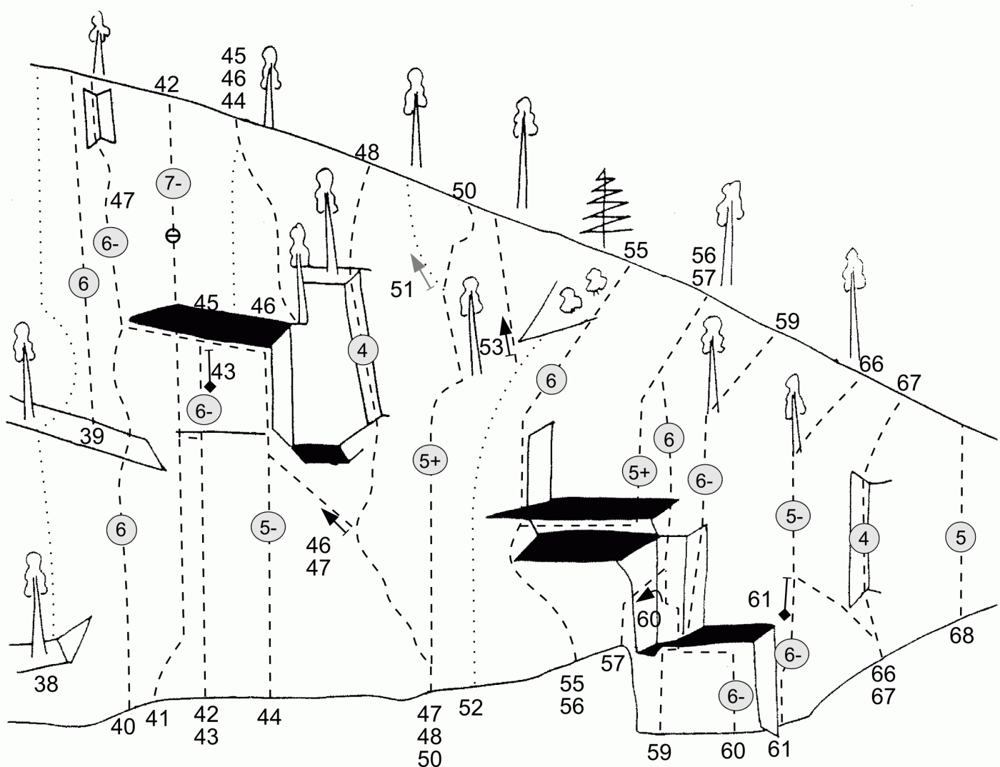
- 39
- Fot Ont
- 6
- Upp 1:a replängden av ''Ljunglöfs'' och sedan upp till vänster om ''Ett steg i taget''
- 40
- Ett steg i taget
- 6
- Ett direkt insteg på ''Två steg i tagets'' sista replängd. <br>'''1. 4+ 20m '''Leden börjar med en kort, tunn spricka. Gå sedan åt höger och vidare rakt upp till en hylla med en tall. Fortsätt upp ett kort väggparti till nästa hylla. Standplats. <br>'''2. 6 30m '''Fortsätt uppför nästa vägg och vidare i ett hörn upp till den stora vita hyllan. Klättra rakt upp i nästa hörn. Gå sedan åt höger på lättare klippa. Vidare i nästa hörn som lutar åt vänster och sedan ytterligare något åt vänster ut på väggen och vidare rakt upp till takslutet och Två Steg i Tagets sista replängd. Replängden är bitvis dåligt säkrad, run-out varning. Standplats i taket.
- 41
- Ljunglöfs nya insteg
- ?
-
- 42
- Degos
- 7-
- Delar insteg med ''Ljunglöfs'' till standplatshyllan.
<div style="font-size:80%">
Det finns ytterligare några bultade leder genom Ljunglöfstaket som inte är dokumenterade här. De är rekommenderade att klättra.
</div>
- 43
- Ljunglöfs
- 6-
- Detta är ett mycket flott direkt insteg på ''Demokrati och valfrihet''. Leden bjuder på fin väggklättring och en härlig takpassage. Leden börjar någon meter till vänster om ''Tre i Ett''.<br>'''1. '''Klättra väggen med dragning åt vänster upp till den ljusa hyllan. Fortsätt några meter upp till borrbulten och gör standplats där.<br>'''2. '''Fortsätt sedan rakt upp. Korsa Två steg i taget och gå igenom taket där det delar sig. Därefter vidare upp till Demokrati och valfrihet.
- 44
- Tre i ett
- 5-
- Denna led sammanbinder tre leder till en jämn och fin klättring ända upp till toppen. Den startar rakt under en stor vit fläck mitt på väggen och även rakt under det stora taket.<br> Börja med att följa en spricka i ca 15 m. När den går in på en hylla fortsätter man åt vänster ut på väggen. Klättra sedan uppåt via några hål för att nå nästa spricka. Följ den upp till hyllan under det stora hörnet. Ni är nu inne på ''Två steg i taget''. Klättra hörnet och gå vidare rakt upp mot ''Märta Brodén''. Klättra därefter ''Märta Brodén'' upp till toppen.
- 45
- Demokrati och valfrihet
- 5
- Traversera från det lutande taket på ''Märta Brodén'' runt kanten åt vänster och vidare ut på väggen några meter. Fortsätt sedan rakt upp.
- 46
- Märta Brodén
- 4
- En trevlig variant till utsteget på ''Röde orm''. Den andra replängden ser kanske respektingivande ut, men när väl de första 4-5 metrarna är avklarade dyker goda grepp och killägen hela tiden upp när de som bäst behövs.<br>'''1. 3+ 20m '''Traversera från början av ''Röde orms'' 2:a replängd åt vänster över väggen bort till ett lutande träd.<br>'''2. 4 30m '''Väggklättra först några meter uppåt och fortsätt sedan i hörnet vidare upp till toppen.
- 47
- Två steg i taget
- 6-
- Första replängden sammanfaller med ''Röde orm''. Kruxet finns i början av 3:e replängden <br>'''2. 5+ 40m '''Klättra upp på hyllan till vänster om standplatsen. Fortsätt snett åt vänster upp under taket och vidare ut på en stor lång hylla. Klättra det stora hörnet till höger (något löst) upp till det stora taket. Gör sedan en härlig travers åt vänster under taket. Hängande standplats där taket slutar. <br>'''3. 6- 40m '''Fortsätt rätt upp i 15 m för att sedan dra något åt höger mot utstegshörnet. Följ hörnet till toppen.
- 48
- Röde orm
- 4
- Detta är den kanske oftast klättrade leden på Stora Berget. Den erbjuder jämn och fin, men ändå varierad klättring särskilt i den andra replängden. <br>'''1. 3 30m '''Insteget är på samma plats som ''Svarta tupp''. Följ en tunn ramp några meter snett upp åt vänster och fortsätt därefter på några hyllor rakt åt vänster fram till ett hörn. Klättra upp till en hylla. Gå sedan ett par meter åt vänster till en spricka med goda grepp och steg. Klättra denna och fortsätt till tallen.<br>'''2. 4 40m '''Klättra upp till en hylla några meter snett upp till vänster. Fortsätt 2 m rakt upp till ett litet tak och traversera till höger under detta på goda undergrepp. Fortsätt sedan uppåt ett tiotal meter med dragning åt höger. Följ därefter sprickan, som högre upp övergår i ett hörn. Gör standplats på hyllan till vänster. <br>'''3. 3 10m '''Följ sprickan, i förlängningen på ovannämnda hörn, till toppen.
- 49
- Eldris
- 6
- Bultlinjen längst till vänster på toppväggen till höger om ''Röde Orm''.
- 50
- Svarta tupp
- 5+
- Leden börjar 20-30 m till vänster om de stora taken, några meter under ett markant hörn. <br>'''1. 4 35m '''Klättra upp till hörnet och följ detta upp på en hylla. Gå 2 m åt höger. Klättra uppför ett ca 5 m högt och något överhängande parti. (Krux, svårsäkrat). Följ den tunna sprickan till en stor tall.<br>'''2. 5+ 25m '''Lätt klättring med dragning en aning åt vänster upp till en hylla i en nisch. Kliv ut på väggen åt höger och fortsätt på små, men goda steg och grepp längs den tunna sprickan i 6 m. Traversera sedan åt höger någon meter och därefter rakt upp. Acceptabel säkring med framför allt wirekilar.
- 51
- Eigils nordvägg
- 5+
- Utmärks i likhet med ''Svarta Tupp'' av den för Stora Berget så typiska väggklättringen på små, men ”välutbildade” grepp och steg. Fortsätt något längre till vänster om ''Svarta Tupp''. Följ den tunna sprickan till toppen. Glest mellan säkringarna.
- 52
- Bjällerklang
- 4
- Nedre delen är svårsäkrad och ofta blöt. Insteget ligger 10 m till vänster om taket. Ta högra sidan av rännan och vidare snett till höger in i hörnet. Klättra upp 5 m och sedan 3 m ut till vänster och upp i ett nytt hörn. Fortsätt vidare över hällar till den stora tallen. Standplats. Utsteg via sned ramp (vandring), eller någon annan led, t.ex. ''Röde orm'' eller ''Svarta tupp''.
- 53
- Vått o torrt
- 6
- Brant och fin väggklättring på pelaren till höger om ''Svarta tupp''. Kilar och borrbultar.
- 54
- Stött & blött
- 6+
- Utstegsvariant av ''Vått o torrt ''rätt över taken.
- 55
- Lurige Laban
- 6
- En knälayback är nyckeln till denna annars mycket ”luriga” led. Svårsäkrat, men lättklättrat upp till taket. Starta på samma sätt som på ''Cirka nitti'', men gå rätt över taket istället för åt höger. Följ sedan hörnet ända upp.
- 56
- Cirka nitti
- 5+
- Börja i hörnet under taket. Traversera snett uppåt till vänstra kanten av taket. Gå ut till höger mellan taken. Gör en luftig travers på några meter, för att sedan gå över taket och fortsätta upp mot en fin tall.
- 57
- Hårige Harry
- 6
- Kruxet har en viss förmåga att framkalla ”harighet” där den inte annars brukar finnas. <br>Insteg vid stora hörnet till höger under det stora taket. Följ hörnet till en stor spricka, som går åt höger. Hangla sprickan på goda grepp in till nästa hörn. Gå upp i hörnet (krux). Sedan ut till höger på kanten och upp under taket. För att nå den dåliga sprickan måste man gå något till vänster och sedan rätt upp. Efter några meter drar man sig åt vänster upp mot en hägrande tall. Standplats. Fortsätt uppåt förbi buskar och över lösgods.
- 58
- ?
- 7?
- Plattan vänster om ''Raka Ruben''.
- 59
- Raka Ruben
- 6-
- Detta är den finaste och jämnaste lederna uppför detta väggparti. Insteget är vid stora block. Med lite planering och finess kan man få bra säkring hela vägen.<br>Börja med att klättra upp till en stor skiva. Följ den för att sedan gå till vänster under taket. Där det övergår till ett litet hörn kliver man till höger mot ett stort markant hörn. Följ det. Gå ut till höger vid taket och följ sprickan till tallen. Standplats. Bästa sättet att ta sig från standplatsen är att fira.
- 60
- Krångliga Krulle
- 6-
- Den som klättrar leden får snart förklaringen till namnet. Leden börjar i den tydliga sprickan till höger om insteget på ''Raka Ruben''. Följ den upp till taket. Traversera åt vänster under taket bort till hörnet på ''Raka Ruben''. Klättra det upp till nästa tak. Traversera åt vänster till nästa hörn. Fortsätt upp i detta till en stor horisontalspricka. Följ den åt vänster och hangla ner till nästa hörn. Klättra det ner till hyllan och gör standplats. Du befinner dig nu ungefär i höjd med insteget.
- 61
- Ville direkt
- 6-
- Klättra den tydliga arêten rätt upp mot utstegssprickan på ''Velige Ville''.
- 62
- ?
- 7
- Tak och överhäng till vänster om ''Samhällsparasiten''.
- 63
- ALU
- 6-
- Start som ''Samhällsparasiten'' men använd arêten. Sedan ut i ''Ville direkt''.
- 64
- Samhällsparasiten
- 7?
- Väggklättring till höger om ''ALU''. Använd inte arêten.
- 65
- ?
- 6+
- Plattan mellan ''Ville direkt ''och ''Velige Ville''.
- 66
- Velige Ville
- 5-
- En intressant och varierad led i brant klippan, men utan alltför stora svårigheter. Fördel med dubbelrep. Samma insteg som ''Smultronstället''.<br>Följ de tunna sprickorna sentt åt vänster. Traversera rakt åt vänster i ca 4m när det blir brantare. Passera överhänget (krux) upp till en fin fingerspricka. Följ den upp till tallen. Härifrån är det enklast att fira, men det går även att fortsätta uppåt förbi lite buskar och träd.
- 67
- Smultronstället
- 4
- Detta hörn, som rensats med mycket slit, följs hela vägen för att avslutas med ett litet krux. Något svårsäkrat första biten upp till hyllan.
- 68
- Släktleden
- 5
- Längst till höger, där väggen är som lägst, finns flera korta, fina sprickor. Leden följer sprickan längst till vänster. <br>Klättra först ett kort grunt hörn. Gå sedan till vänster för att via en känslig passage nå till bättre grepp i sprickan. Följ därefter sprickan ända upp.
Plattan
På toppen av Stora berget gå mot den västra nedstigningen. Följ skyltar märkt Plattan. Väggen har en lutning av c:a 70 grader och är c:a 10 meter hög. Stand och topprep fäster man i träden på toppen.
Musväggen
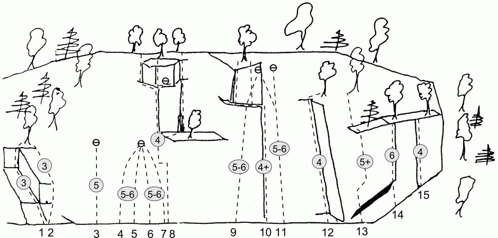
Musväggen är 10-25m hög och skuggas av höga granar. Klättringen är är rolig och omväxlande och, med några enstaka undantag, inte alltför svår. En fin vägg för nybörjare och för ”uppmjukning”. De flesta lederna är inom 5:a - 6:a registret.
{|
|- valign="top"
| width="350px" |
- 1
- Gröna mattan
- 3
- Klättra det tydliga hörnet längst till vänster på väggen. Man kan även gå över plattan.
- 2
- Balla bullar
- 3
- Följ de båda sprickorna till höger om hörnet.
- 8
- Fina Stina
- 4
- Leden är egentligen en tradled, men nu finns bultar som är lätta att använda.<br>Börja rätt upp på stora grepp och formationer. Gå till vänster efter 6-7m. Vidare upp på små steg till en hylla. Från hyllan kan man göra två utsteg.<br>'''1. '''Följ sprickan i vänstra kanten på hyllan till ett stort block. Följ därefter antingen den större sprickan rätt över blocket, eller gå till höger och följ hörnet upp. Även det vänstra hörnet kan klättras upp.<br> '''2. '''Fortsätt över hyllan och klättra det trång hörnet. Vidare över ett block och upp i sprickan.
- 10
- Mossiga musen
- 4+
- Börjar rakt under den tunna men tydliga sprickan. Följ sprickan. Där den slutar runda hörnet åt vänster och fortsätt åt vänster bort till en stor spricka. Följ sprickan till krönet.
- 11
- ?
- 5-6
- Har ett alternativt överhängande utsteg till vänster uppe på hyllan.
- 12
- Skogskalle
- 4
- Leden börjar 7-8m till höger om ''Mossiga musen'' och följer hörnet ända upp.
- 13
- Mulliga Maj
- 5+
- Följ sprickan upp över taket. (Lättare om man stödjer foten mot trädet.) Gå upp åt höger på rampen och därefter upp i det lilla hörnet till hyllan. Klättra sedan den korta sprickan.
- 14
- Startsvårigheter
- 6
- 10 m till höger om ''Skogskalle'' finns det små tak. Börja i högra kanten och gå över taket med viss svårighet. Vidare upp i sprickan.
- 15
- Kort spricka
- 4
- Sprickan några meter till höger om ''Startsvårigheter''.
Bräsväggen
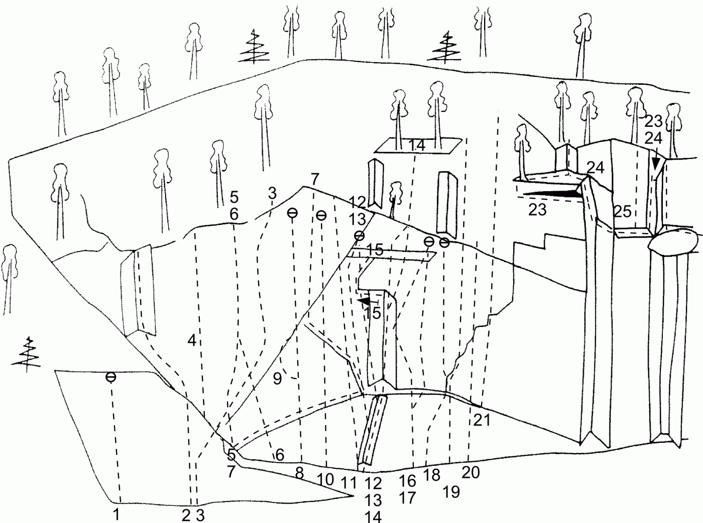
Väggen ligger i öppet sydläge med skydd från vinden. Det är möjligt att ha en lång klättersäsong här, men besökare känner sig som popcorn under varma sommardagar.
{|
|- valign="top"
| width="350px" |
- 1
- Peanuts
- 5+
- Pelaren till vänster om ''Skitiga stjärten''.
- 2
- Skitiga stjärten
- 4
- Klättra kaminen upp till toppen på blocket. Kliv upp på listen och traversera åt vänster till ett hörn.
- 3
- Tjutande tiljor
- 6-
- Starta till höger om kaminen med lätt klättring upp på hyllan. Fortsätt uppför väggen någon meter. Traversera åt höger till en tunn spricka. Klättra sedan snett upp åt höger på rampen mot ett tydligt hörn i slutet av leden. Fortsätt in i hörnet och upp.
- 4
- Kalle Anka
- 5+
- Väggklättring som börjar i tydlig spricka.
- 6
- Byvägen
- 7+
- Alternativt insteg till ''Autostrada''.
- 7
- Sick-sacket
- 5+
- '''1. '''Klättra från hyllan upp i hörnet till höger. Traversera vidare åt höger till hyllan innan'' Bräsvecket''.<br>'''2. 5+ 10m '''Följ sprickan åt vänster.
- 8
- Estrella
- 8
- Tunn, tung, kruxig och få vilopositioner. Fin – om man orkar.
- 9
- OLW
- 7+
- Variant av ''Estrella''.
- 10
- Naturell
- 8+
- Markant överhäng utanpå ett hörn.
- 11
- Lagerblad
- 6-
- Fin väggklättring.
- 11b
- Luta lätt
- 8-
- Pelaren till höger om ''Lagerblad''.
- 11c
- Tjugoåttaåttio
- 8
- Vägg till höger om ''Luta Lätt''.
- 12
- MarKant
- 8
- Går över en liten arête i början.
- 13
- Dansant
- 8
- Mycket tunn väggklättring. Första bultade leden till vänster om det stora hörnet på mitten av väggen.
- 14
- Bräsvecket
- 6-
- Leden börjar rakt under ett stort hörn. Starta i det lilla hörnet och följ det upp till hyllan. Börja med att klättra hörnet och sprickan på högra väggen. Gå sedan in i sprickan och följ den rakt upp till hyllan. Det är något lättare om man tar den högra sprickan. Fortsätt på högra kanten på väggen ovanför (som är lite svårsäkrad).
- 15
- Hävsträcket
- 7-
- Klättra det stora hörnet rakt upp. Gå till vänster under taket och sedan upp i det lilla hörnet.
- 16
- Rebuffa
- 8-/8
- Första borrbultade linjen till höger om det stora hörnet på mitten av väggen. Samma insteg som ''Örnnästet''.
- 17
- Örnnästet
- 8-
- Går över taket strax ovanför svaplattan. Bultad av Ö. Söderin?
- 18
- Sjutjugi
- 7
- Börjar med ett litet boulderproblem på den lilla väggen längst ned och går sedan med dragning åt höger över svaet. Runda taket på höger sida och in i ett hörn. Kliv sedan ut på väggen till ett stort hål och sedan rakt upp.
- 19
- Full rulle
- 6+
- Börja med ett hörn och vidare uppför en skiva till en hylla. Klättra något åt vänster och sedan rakt upp i en tak-hörnformation. Sedan är det bara att friska på uppför den mycket branta väggen. Fortsätt från den från sista bulten upp. Ta sedan ett bra grepp långt ut till höger och sedan är det bara att hiva sig upp på hyllan. Gå rakt över hyllan och in i en stor sned spricka i taket. Klättra upp i sprickan och sedan vänster ut på väggen och vidare rakt upp till toppen.
- 20
- Tresexti
- 6+
- Rolig klättring och hyfsat brant för graden.
- 21
- Cuba si
- 6
- Leden följer några mycket tunna sprickor. Följ den vänstra av de två sprickorna. Klättringen upp till hyllan är fin, tunn och ihållande. Fortsätt från hyllan upp i hörnet och över taket på goda jam. Klättra därefter vidare upp i sprickan till en liten hylla och från den upp i det korta och något överhängande hörnet.
- 22
- Bale hopp
- 7+
- Taken långt till höger bakom en stor gran.
- 23
- Rückkragen
- 5+
- Leden börjar från det stora blocket i Kempeslukten. Gå från blocket åt vänster ut på hyllan. Vid hyllans slut häver man sig ner och hnglar sprickan till vänster in i hörnet. Klättra hörnet några meter. När det blir brantare traverserar man åt vänster under det lilla taket ut på plattan och upp på hyllan. Man kan göra samma utsteg som ''Rückärmen''.
- 24
- Rückärmen
- 5+
- Traversera inte åt vänster ut ur hörnet på ''Rückkragen''. Klättra istället rakt upp i hörnet till hyllan. Gå över hyllan och upp i nästa hörn.
- 25
- Gömsprickan
- 4
- Leden börjar på hyllan 1m innan nedsänkningen på ''Rückärmen''. Klättra den korta väggen för att nå sprickan. Följ sedan sprickan.
Lilla berget, del 1
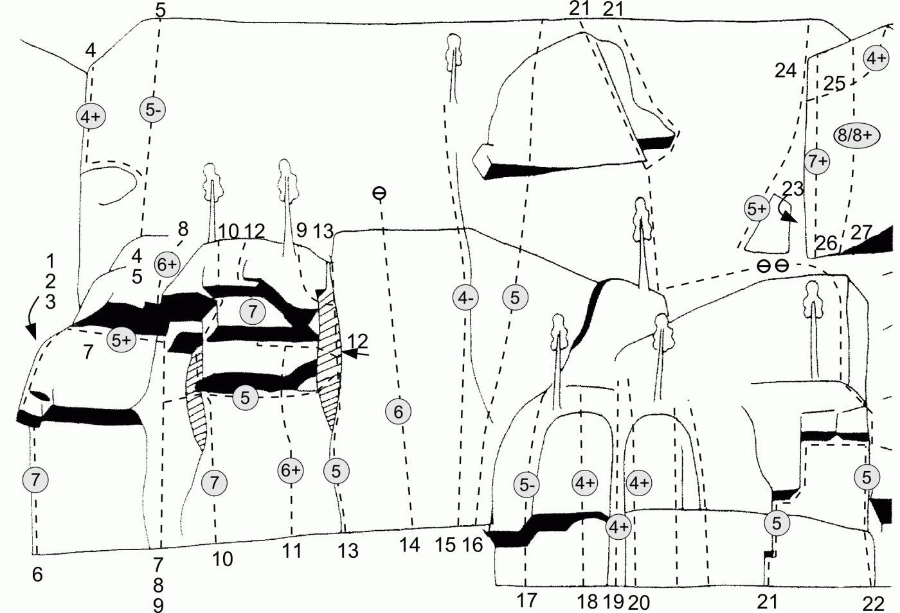
Denna vägg kallas i tidigare förare för
fikahyllan
- 1
- Fischerrisset
- 7-
- Den tunna, men tydliga, sprickan på den överhängande väggen till vänster om ''Bagar Berta''. Fin klättring med kruxet i övre delen. <br>Leden saknar säkringsmöjligheter upp till tvärsprickan. Risk för markfall.
- 2
- Dunderhonung
- 7+
- Går mellan ''Fischerrisset'' och ''Randy rabbit.'' Fint väggproblem och tungt takmove.
- 3
- Randy rabbit
- 4
- Kaminen i hörnet till vänster om ''Bagar Berta''.
- 4
- Svarta katten
- 4+
- En ganska fin linje uppför ett markant hörn. Leden är ofta blöt. Gå ut på blocket som sitter fastkilat i Kempeslukten. Kliv ut från blocket in i hörnet och följ detta till toppen. Man kan undvik det branta utsteget genom att kliva upp på en hylla till vänster. Graderingen gäller sistnämnda variant. Det går också att göra en variant genom att följa sprickan ute på hörnet till vänster.
- 5
- Lummigt läskpapper
- 5-
- Leden börjar på hyllan ovanför ''Georgs grind''. Gör en luftig hangel snett uppåt höger i sprickan och runt hörnet fram till en björk. Här är det lätt att kliva upp på toppen, men man kan också fortsätta åt höger ca 15 meter med en ganska lätt travers på en hylla av växlande bredd.
- 6
- Bagar Berta
- 7
- Följ det utstående hörnet över taken upp till hyllan på ''Georgs grind''. Något svårsäkrat krux.
- 7
- Georgs grind
- 5+
- Upp i hörnet till taket. Fortsätt sedan ut till vänster under taket och upp på en hylla. Därefter vidare upp över hällen.
- 8
- Gummicknodden
- 6+
- Klättra hörnet och över taket i den tunna sprickan. (Första fritt: R. Hedman, J. Liliemark)
- 9
- Huva huva
- 5
- Klättra ca 6m i hörnet. Traversera sedan i en spricka till höger under taket till ''Huva''.
- 10
- Neverest
- 7
- Följ pelarkantens högra sida i början. Vid första taket börjar problemen med att känsligt balansmove på vänstra sidan. Gå sedan åt höger. Problem för långa. Ett hårt lay-backmove avslutar leden.
- 11
- Hornbein
- 6+
- Direkt insteg på ''Everest'' som gör hela leden roligare att klättra. Kruxet är vid taket.
- 12
- Everest
- 7
- Denna led börjar i mitten av ''Huva''. Kliv ut till vänster ovanför det första taket. Traversera åt vänster under det andra taket och klättra över det. Det tredje taket klättras med dragning åt vänster så att man når det avslutande krönet.
- 13
- Huva
- 5
- Liknar den intilliggande ''Hickande giraffen'' både till branthet och linjeföring, men ett bökigt krux nära utsteget gör att jämförelsen kommer av sig.<br>Följ sprickan förbi en lite tall och ett spetsigt block och därefter vidare upp.
- 14
- Bjox
- 6
- Fin platta med små grepp och steg. Säkrades under förstabestigningen med kilar, men är nu helbultad.
- 15
- Hickande giraffen
- 4-
- Jämn och fin klättring.<br>'''1. 4- 40m''' Leden börjar någon meter till vänster om hörnet med sprickorna. Väggklättra upp till en spricka med fastkilade block. Följ sprickan förbi en blockformation och vidare upp i ett litet hörn till en tall. <br>'''2. 3- 5m''' Fortsätt till toppen.
- 16
- Lingon för blåbär
- 5
- Starta 1m till höger om ''Giraffen''. Klättra sedan snett uppåt höger mot toppen.
- -
- Buddas bravader
- 6
- Till vänster om ''Hörnet på hörnet''.
- 17
- Hörnet på hörnet
- 5-
- Över det lilla taket och upp i hörnet. Något svårsäkrat.
- 18
- Roliga Rune
- 4+
- Klättra det lilla taket och det svagt utbildade hörnet närmast till vänster om ''Stånkande Örnen''.
- 19
- Stånkande örnen
- 4+
- Kaminen är lättare att klättra, men svårare att säkra ju längre ut man klättrar.
- 20
- Sämpiga Sune
- 4+
- Klättra kanten till höger om ''Stånkande örnen''.
- 21
- Hängande hunden
- 5
- Den korta 5:a passagen kan lätt kringgås och svårigheterna överskrider i så fall knappast 4. I sin undre del bjuder på originell och luftig lay-back- och undergreppsklättring.<br>'''1. 5 25m''' Följ sprick- och flakformationen upp till hyllan. Fortsätt i hörnet (krux) upp till nästa hylla.<br>'''2. 4- 25m''' Gå bort till den stora tallen till vänster (promenad) och fortsätt till höger uppför en skivformation. Gå sedan ett par meter åt vänster till nästa skiva. Följ den någon meter. Gå sedan upp i sprickan som klyver skivan och följ denna till toppen.
- 21b
- Fido
- 5
- Utstegsvariant på ''Hängande hunden''.
- 22
- Hängda hunden
- 5
- En variant på insteget till ''Hängande hunden''. Gå upp undertaket. Därefter ut till vänster och sedan rakt upp i den tunna sprickan.
- 23
- Syster yster
- 7-
- Leden går uppför den svagt överhängande väggen till vänster om ''Jubileumsleden''. Börja från toppen av det stora blocket.
- 24
- Direkta diagonalen
- 5+
- Börja med att klättra 1 meter på ''Diagonalen''. Fortsätt sedan rakt upp i den korta fina jamsprickan till toppen.
- 25
- Diagonalen
- 4+
- Leden börjar i rännan till vänster om skivan. Gör en luftig hangel snett uppåt höger i sprickan och runt hörnet till en björk. Här är det lätt att kliva upp på toppen, men man kan också fortsätta åt höger ca 15 meter med en ganska lätt travers på en hylla av växlande bredd.
- 26
- Jubileumsleden
- 7+
- Spreisa upp i kaminen till spetsen på blocket. Gå till höger in på väggen och följ den svagt utbildade rännformationen upp till ''Diagonalen''. Kruxet är längst upp.
- 27
- Irén desperation
- 8/8+
- Kruxet kommer efter ca 5m. Små grepp och ett gott fotarbete löser problemet.
Lilla berget, del 2
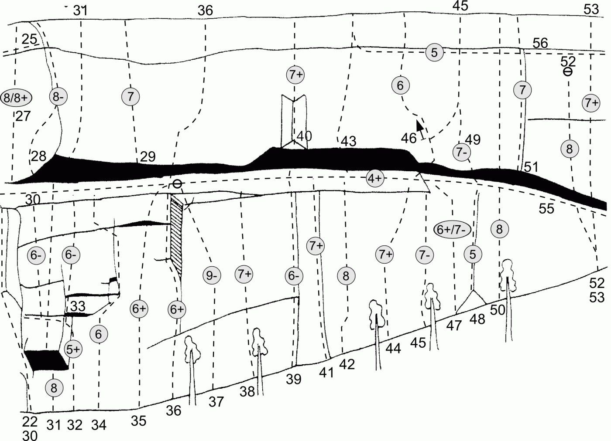
- 28
- Paradontos
- 8-
- Starta på samma ställe som ''Jubileumsleden''. Klättra snett upp åt höger över den branta väggen. Fortsätt från den andra borrbulten rakt upp till ett mantle-shelf-move upp på en liten hylla. Därefter vidare något åt höger och så rakt upp med en kringgående rörelse åt vänster för att till sist klättra upp till toppen.
- 29
- Två och nitti
- 7
- Leden startar 1 meter till vänster om där ''Enok nitti'' går över taket. De första 4:a metrarna är kruxet – tung, överhängande klättring. Resten är lättare svaklättring upp till toppen.
- 30
- Byrackan
- 6-
- Starta med ''Hängda hunden''. Gå sedan till höger ovanför taket och fortsätt med det direkta utsteget på ''Cecilias insteg''. Fortsätt där sprickan svänger åt vänster rätt uppför den branta väggen till ''Krälande krokodilen''.
- 32
- Cecilias insteg
- 5+
- Klättra upp i hörnet och sedan till vänster i en horisontell spricka. Efter någon meter kan man gå rätt upp (något svårsäkrat), eller fortsätta ut till ''Hängande hunden''.
- 33
- Olmo
- 6-
- Denna led förbinder ''Cecilias insteg'' med ''Sailors Delight''. Börja med ''Cecilias insteg'' och fortsätt rakt upp i sprickan efter hörnet till en borrbult. Fortsätt något åt höger och sedan vidare rakt upp mot den vita fläcken på ''Sailors delight''. En fin kombination av två leder som eliminerar kruxet på ''Sailors delight''. Tillsammans med nämnda insteg och utsteg blir graden 6-, b.
- 34
- Sailors delight
- 6
- Upp till den tydliga flaksprickan. Ut till höger och vidare i sprickan, som blir allt gundare. Kruxet passeras med hjälp av minimala grepp och steg. Traversera vänster mot en vit fläck till en lite hylla. Sedan upp över ett litet tak till standplats på en hylla.
- 36
- Enok nitti
- 6+
- Den kanske finaste linjen genom Lilla bergets massiva mittparti. Redan efter ett par meter får kortvuxna personer en brysk förklaring till det kryptiska namnet på denna led. <br>'''1. 6- 20m''' Brant upp till en decimeterbred hylla. Upp med hjälp av sprickan till höger. Följ sedan sprickan upp i ett hörn. När sprickan blir för tunn går man till höger upp på ''Krälande krokodilen''.<br> '''2. 6+ 20m''' Upp genom överhänget på små grepp. (Det går att lägga en lite kil i kruxen när man står på krokodiltraversen.) Följ en smal hylla ut till höger precis på kanten av taket och sedan rakt upp i en fin spricka.<br> '''3. 3 10m''' Upp till toppen.
- 38
- Skuckuskräcken
- 7+
- Mix om man vill. Mandomsprovet i Stugun.
- 39
- Direkta Krokodilen
- 6-
- Börja i ett hörn. Klättra på goda grepp upp till en nisch 5 meter över marken. (Bra kilplacering i nischens överkant.) Klättra nischöverhänget (krux) och vidare upp i fil lay-bakcspricka, som de sista metrarna övergår i jamspricka, upp på Krokodil-hyllan. Greppen på leden är goda, men viloställena få.
- -
- Dagvag
- 8+
- Tak till vänster om ''Ullmerkotten''.
- 40
- Ullmerkotten
- 7+
- Klättra ut i sprickan genom taket och upp i det överhängande hörnet. Följ sprickan till en tall och därifrån lätt klättring till toppan.
- 41
- Bättre grepp
- 6
- Börja inne i hörnet och följ med hjälp av runda grepp den högra sprickan upp till Krokodilhyllan.
- 42
- Runda rabatten
- 8
- Leden är egentligen ett boulderproblem med tre hårda rörelser. Lätt klättring upp till överhänget. Sedan kommer den korta, men brutala, passagen. Lättare sedan.
- 43
- Höstsonaten
- 9-
- Följ en spricka genom taket till toppen. Leden kan aidas clean med bara kilar.
- -
- Höstsonaten andra symfonin
- 9-
- ''Höstsonaten'' med alternativt utsteg till vänster.
- 44
- Lottaleden
- 7+
- Ett tungt boulderproblem.
- 45
- Varanen
- 7-
- ''1. 6- 10m''' Först upp till borrbulten. Sedan en grund spricka till hyllan<br>'''2. 7- 35m''' Från björken ut till höger. Upp på en hylla och snett upp till höger tills man når en vass fingerspricka som följs till toppen.
- -
- Varianten
- ?
- Utstegsvariant på ''Varanen''.
- 46
- Varianen
- 6
- Utstegsvariant på ''Varanen''. Ovanför taket går man rakt upp i ett hörn, över det lilla taket och upp på plattan (krux). Det är stor risk att falla i en hylla vid kruxet då senaste säkringen ligger rätt långt ner. Sedan lättare mot toppen.
- 47
- Populärleden
- 6+/7-
- Boulderproblem
- 48
- Kajmaanen
- 5
- Upp över håligheten. Följ sedan sprickan upp till ''Krälande krokodilen''.
- 49
- Kajmani
- 7-
- Rolig takklättring på goda grepp.<br>Klättra från ''Kajmaanen'' över taket i ett litet hörn. Sedan åt vänster och vidare rätt upp i ''Varanen''.
- 51
- Liten och torr
- 7
- Taket är kruxet. Sedan följer ansträngande, men lättare, sprickklättring i 5 meter. Resten av leden bjuder på fin hörn- och sprickklättring.
- 53
- Pojken
- 7+
- Avslutas ofta i ''Inte netts'' ankare.
- 55
- Krälande krokodilen
- 4+
- Bortsett från en oväntad ”15-meterspromenad” i mitten så består de första två replängderna mest av, bitvis luftig, hangelklättring. Man bör ha med sig stora kilar.<br>'''1. 4 10m''' Fin hangel till en bra standplats på hyllan.<br>'''2. 4+ 30m''' Fortsätt traversen förbi en luftig passage till en hylla. Kräla sedan runt hörnet till standplats.<br>'''3. 3+ 25m''' Från en stor tall upp till skiva. Följ högra kanten upp.
Lilla berget, del 3
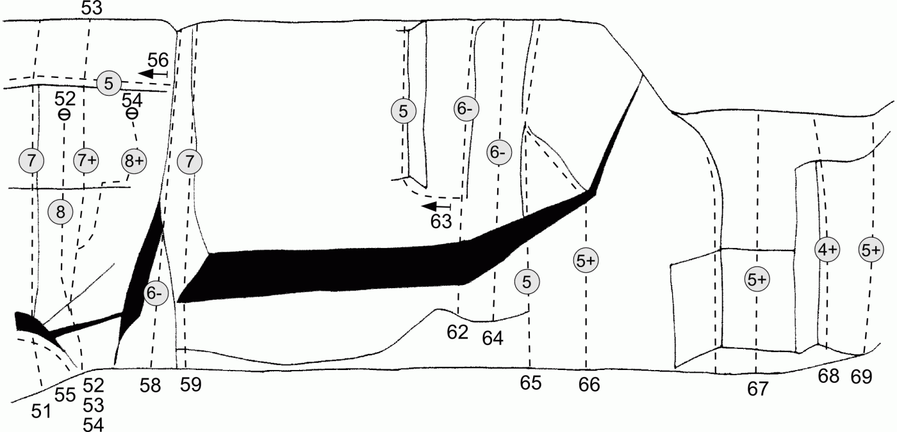
- 56
- Luftiga Lisa
- 5
- Leden startar vi utsteget till ''Stor och blaut''. Därifrån traverserar man åt vänster över ''Varanen'' och vidare bort till en fin hylla. Från hyllan följer man sprickan som går snett upp åt höger.
- 57
- Mixter
- A2
- Den överhängande väggen till vänster om ''Stor och blaut''. Rivets, Heads, små cammar + lite uppfinningsrikedom.
- 58
- Stor och blaut
- 6-
- Den stora tydliga kaminen.
- 59
- Ståre Sture
- 7
- Gå över det lilla taket i början och sedan rakt upp något till vänster om pelaren. Klättra åt höger efter kruxet. Behöver kompletteringsbultas.
- 60
- Fikasprickan
- A2+
- Den tydliga sprickan genom taket till höger om ''Ståre Sture''. Lite friklättring grad 4 på utsteget.
- 61
- Färsen
- 7
- Travers i taket ovanför fikahyllan.
- 62
- Hoppande tallen
- 6-
- Upp några meter till överhänget och ut till vänster. Genom en ”apliknande” rörelse kan man nå ett grepp en bit ovanför taket (där man bör lägga en kil innan man fortsätter till toppen).
- 63
- Studsande granen
- 5
- Ca 2 meter ovanför taket på ''Hoppande tallen'' traverserar man åt vänster till ett hörn. Följ hörnet till toppen.
- 64
- Jurassic cliffhanger
- 6-
-
- 65
- Åteln
- 5?
- Ett nyckelgrepp har lossnat sedan originalbestigningen. Lätt klättring upp till en markant spricka som börjar ovanför ett tak. Följ sprickan ett par meter till ett litet tak. Upp över taket och vidare till toppen.
- 66
- Alfons tak
- 5+
- Startar ca 5 meter till höger om ''Åteln''.
- -
- Utsteg på Alfons tak
- 5+
- Variant på utsteg till höger ovan taket.
- 67
- Gäddede ede
- 5+
- Pelaren till vänster om'' Lederleppen''.
- 68
- Lederleppen
- 4+
- Det tydliga hörnet.
- 69
- Utan vidare
- 5+
- Börja med att klättra ett brant hörn några meter till höger om'' Lederleppen''. Gå sedan ut på hyllan till vänster. Fortsätt därefter lite till höger och upp. Följ ryggen och avsluta med ett litet hörn.
Vita väggen
Denna vägg hör ihop med Lilla berget. Den begränsas uppåt av bl.a. Fikahyllan och stigen upp till denna. Väggen utmärks av ljus klippa (kvarsit) och ganska få markanta formationer. Väggklättringen med viss assistans av tunna sprickor dominerar. Klippan blir brantare i sin nedre högra del och här finns också de svåraste lederna.
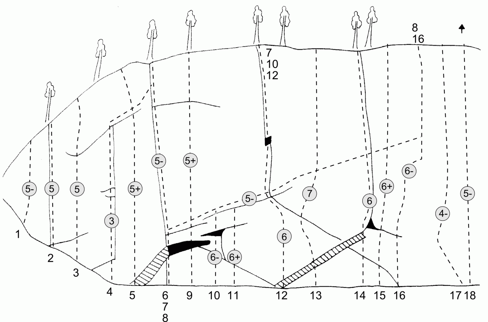
- 2
- Varglaven
- 5
- Följ den tunna sprickan. Kruxet är en liten balansakt.
- 3
- Hjorten
- 5
- Klättra rätt uppför väggen mot en svagt rundad nisch. Fortsätt upp i den och vidare till Fikahyllan.
- 4
- Svanen
- 3
- Något svårsäkrad nybörjarled.<br>Väggklättra upp till en spricka. Följ denna rakt upp till en ramp. Fortsätt till höger på rampen och gör samma utsteg som ''Dammiga strutsen''.
- 5
- Lige
- 5+
- Krux i starten, lättare sedan.
- 6
- Dammiga strutsen
- 5-
- Denna klassiker är den vänstra av de två tydligast framträdande linjerna på Vita Väggen. Börja med att klättra upp över taket. Följ sedan sprickan hela vägen upp.<br>Insteget kräver viss eftertanke. Misslyckas man med insteget kan man traversera in från vänster ovanför kruxen via en ramp.<br>Därefter återstår trivsam och välsäkrad 4- klättring.
- 7
- Albatrossen
- 5-
- Samma insteg som ''Dammiga strutsen'', men direkt efter taken traverserar man åt höger ca 6 meter. Därefter fortsätter man rakt upp i sprickan.
- 8
- Glasstruten
- 5-
- Samma insteg som ''Dammiga strutsen'', men direkt efter taken traverserar man åt höger ända bort till ''Talgoxen''.
- 10
- Flyttsträcket
- 6-
- Börja i nischen. Passera överhänget och upp till traversen på ''Albatrossen''.
- 11
- Klädstrecket
- 6+
- Instegsvariant till ''Flyttsträcket''.
- 13
- Skarven
- 7
- Starta något till höger om ''Brant och tunn''. Klättra sedan snett upp åt höger förbi två borrbultar. Kruxet finns längst upp på den branta väggen. Resten av leden är avsevärt lättare.
- 14
- Broilern
- 6
- Följ den tunna sprickan. Svårare än man tror.
- 15
- Pippin
- 6+
- Pelaren till höger om ''Broilern''. Lättare om man drar sig åt vänster.
- 16
- Talgoxen
- 6-
- Följ den tunna sprickan till höger om ''Broilern''. Gå sedan i en båge till höger om en gran. Fortsätt därefter rakt upp.
- 17
- Varför
- 4-
- Leden startar vid ''Sopa Zeke''. Traversera vänster på en ramp. Fortsätt sedan upp i hörnet och följ det till toppen.
- 18
- Sopa Zeke
- 5-
- Leden börjar ett stycke upp till höger på en hylla vid två omkullfallna träd. Klättra de liggande hörnen och så över ett par hyllor och upp i ett brant hörn med en tunn spricka till höger (krux). Följ sedan sprickan upp
- 22
- Hin håle
- 6-
- Ute på plattan längst till höger. Film 2-Väggen
Film 2 väggen
Film 2-väggen ligger ca 60m snett ner till höger om Lilla berget. Väggen är 12m hög och 20m bred. Namnet kommer av att någon okänd ”vandal” skrivit ”Film 2” med stora bokstäver på väggen.
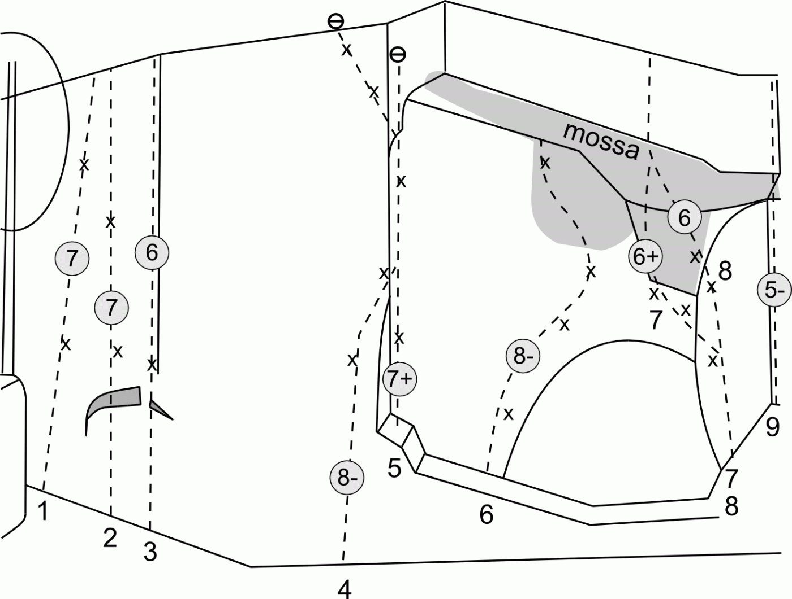
- 4
- Barken orkar
- 8-
- Alternativt insteg och utsteg till Orkaborka.
- 6
- Vladivostock
- 8-
- Bör kanske få ett eget ankare
- 9
- Teachers special
- 5-
- Klättra hörnet i högra delen av väggen och upp till en hylla. Från denna kan man antingen fortsätta sprickan rakt uppe eller gå någon meter åt vänster och upp över väggen.
- 10
- Wet wet wet
- 4
- Kort hörn till höger om ''Teachers special''.
Glömda väggen
Väggen är så hög som 50m på högsta stället och klippan är av god kvalitet.
- 1
- Lenin
- 5
- Leden startar något till vänster om väggens högsta punkt vid en stor gran. Klättra de stora skivorna och hörnet. Fortsätt åt vänster ca 20m till en stor hylla.
- 2
- Kapritjosa
- 4-
- Gå över hyllan med dragning åt höger till nästa vägg. Klättra på goda grepp rakt upp till toppen.
- 3
- Sandinista
- 4
- Klättra sprickan och flaken till höger om ''Kapritjosa''. Avsluta med en delikat friktionsplatta till toppen.
OBS! Klätterförbud på Glömda Väggen vår och sommar till 15/7.
Väggen i skogen
Ny-gammal vägg som fått en rejäl uppryckning. Nya bultar, nya leder och nya ankare.
Väggen i skogen har en nord och en sydvägg. Skissen nedan är på sydväggen. Sydväggen har ett öppet läge vilket gör att den torkar snabbt. Klättringen är främst väggklättring på lister men även sprickklättring förekommer. Det är uppsatt gångrep både uppe på toppen av klippan och nedanför klippan för att underlätta anmarschen
Vägbeskrivning
Underifrån. Gå upp mot Frassehytta sväng höger vid kraftledningen och följ den ca 150m. På vänster sida av väggen sitter ett rep för att underlätta uppstigning till hyllan. Om man kommer uppifrån gå förbi Film 2-väggen sväng höger och snart är man vid toppen av väggen.
Sydväggen
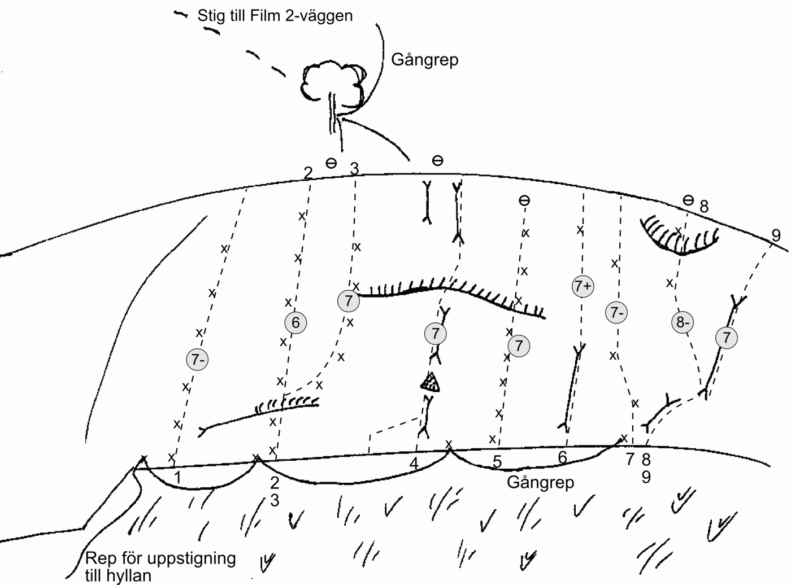
Osäker matchningen mellan led och dess plats på skissen så var beredd på att det kan finnas fel.
Gör ändringar i
Media:Stugun_vaggen_i_skogen.svg
om ni vill justera skissen
- 1
- Andre Jökul
- 7-
- Leden behöver en lätt sopning och ett toppankare.
- 2
- Svälj huvet
- 6
- Ombultad och borstad. Toppankare.
- 3
- Solo
- 7
- Går till höger mellan 2 och 3 bult på ''Svälj huvet.'' Gemensamt toppankare med ''Svälj huvet''.
- 4
- Redundans
- 7
- Följ de två parallella sprickorna upp till ett tak. Där kan man gå både till vänster och höger. Om man är kort är det lättare till höger. Lite tunt säkrad. Toppankare.
- ?
- ??
- 7
- Leden är ombultad och sopad. Kan bli en klassiker (Är det ''Zeunerts röd'' som menas??)
- ?
- Gejsir
- 7
- Tror den startar i den tunna sprickan en borrbult i slutet.
- 5
- Zeunerts röd
- 7
- Kan bli en klassiker.
- 6
- Heddna
- 7+
- Startar i den tunna sprickan.
- 7
- Tummen upp
- 7-
- Startar till vänster om skrå-sprickan på ''Sprickan''.
- 8
- Hak i hälinen
- 8-
- Variant av ''Sprickan''. Toppankare (Ligger eventuellt till höger om ''Sprickan'', olika bud)
- 9
- Sprickan
- 7
- Naturligt säkrad. En blivande klassiker .
- -
- Aquaminerale
- 7+
- Längst till vänster på väggen
- -
- Guinees
- 6+
- Till höger om ''Aquaminerale''.
- -
- Gravöl
- 6
- Längst till höger precis där man kliver upp (vänster om den risiga sprickan)
- -
- Mullah
- 5/5+
- Den högra tvärgående sprickan som börjar precis där man kliver upp på hyllan via de fasta repen.
Följande leder har okänd placering på väggen.
- -
- Ökad tillgänglighet
- 6+
- Starta något till höger om sprickans lodlinje. Klättra några meter. Traversera sedan åt vänster för att nå sprickan. Därefter rakt upp med dragning åt höger.
- -
- Klipptid
- 7-
- Till höger om ''Ökad tillgänglighet''.
Nordväggen
- -
- Mårtens überhang
- 8-
- Arêten längst till vänster på väggen. Dåligt säkrad.
- -
- Rallar ros
- 6
- Till höger om ''Mårtens überhang''.
- -
- Släta väggen
- 7-
- Mellan ''Great lake flake'' och ''Hejsan hoppsan''.
Gömda väggen
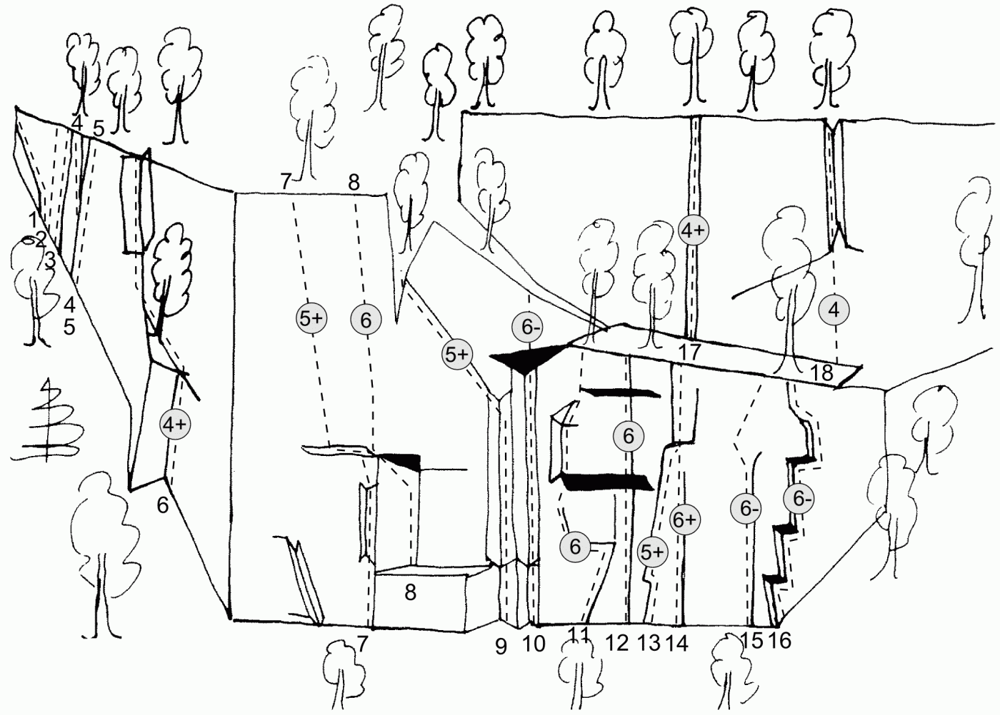
OBS! Klätterförbud på Gömda Väggen vår och sommar till 15/7.
Klippan är mycket lik hård sandsten och är sprickrik, vilket skiljer den från övriga väggar på Stuguberget. Här bjuds alltså på högklassig och välsäkrad sprickklättring. Och även fin, men svårsäkrad väggklättring.
Klippan nås lättast genom att man från lägerplatsen gör österut ner till villaområdet. Där följer man den övre gatan. Där gatan viker av ner mot byn går man rätt upp i skogen mot klippan.
{|
|- valign="top"
| width="350px" |
- 1
- Diggelo diggelej
- 5+
- Sprickan som lutar mycket åt vänster längst upp till vänster på väggen.
- 2
- Vandrande viljor
- 4
- Den svaga inbuktningen några meter till höger om ''Diggelo diggelej''.
- 3
- Sega simpan
- 5+
- Tunn spricka.
- 4
- Bill och Bull
- 4
- Leden börjar bakom en gran vid en skiva som står på marken. Klättra skivan. Fortsätt sedan åt vänster och följ den tunna sprickan ända upp.
- 5
- Knoll och Tott
- 4
- Leden startar på samma ställe som ''Bill och Bull'', men går istället rakt upp i hörnet och den större sprickan.
- 6
- Premiärleden
- 4+
- Leden startar i ett markant hörn. Traversera sedan åt vänster för att nå nästa tydliga hörn. Följ det till toppen.
- 7
- Måndagsbörsen
- 5+
- Ca 15 meter till höger om vinkeln på väggen syns ett hörn ute på en kant. Klättra den korta väggen upp till kanten och hörnet. Fortsätt upp i hörnet till hyllan. Från ungefär mitt på hyllan klättrar man vidare i en svagt utbildad ränna upp till ett block. Gå något till höger och därefter rakt upp till toppen.
- 8
- Hylands hörna
- 6
- Starta i det största och tydligaste hörnet på hela väggen. Den högra väggen på hörnet har fin gulaktig klippa. Efter några meter i hörnet går man åt vänster för att undvika överhänget och sedan rakt upp till hyllan. Fortsätt från högra kanten av hyllan uppför en kort vägg och sedan vidare ut på den svage, men tydliga ryggen ända upp.
- 9
- Ledmotivet
- 5+
- Klättra hörnet och avsluta med den fina sprickan ut till vänster.
- 10
- Vi föräldrar
- 6-
- Starta i hörnet längst till höger och följ det mot taket. Sista biten upp till taket är något svårsäkrad. Traversera något åt höger under taket. Klättra över taket med en vild spreisning på goda grepp. Fortsätt vidare mot toppen.
- 11
- Levande livet
- 6
- Börja i en ränna till höger om en tydlig spricka. Klättra rännan några meter. Följ sedan en markant spricka åt vänster. Runda en bulle och fortsätt sedan rakt upp till den lilla hyllan under hörnet. Följ hörnet. Där Hörnet viker av åt höger ögr men en kort travers åt höger för att nå sprickan. Följ sedan sprickan ända upp.
- 12
- Alice Babs
- 6
- Börja i den tydliga sprickan. Följ den rätt upp till överhänget. Klättra överhänget med bra fingerjam i den tunna sprickan. Gå sedan åt vänster under nästa överhäng och vidare upp för att nå den fina sprickan vilken leder till hyllan.
- 13
- Lill-Babs
- 5+
- Leden startar mitt på väggen och följer den bredaste sprickan upp. Börja med att klättra upp till ett hål med undergrepp. Fortsätt något åt höger och klättra sedan ut på väggen till vänster om sprickan. Fortsätt sedan rakt upp och gå in i en fin lay-back upp till en liten hylla. Följ den fina jamsprickan ända upp.
- 14
- Direkta Lill-Babs
- 6+
- Klättra den tunna fina sprickan tills den är slut. Fortsätt rakt upp på dåliga grepp till utstegssprickan på'' Lill-Babs''. Leden blir lättare om man tar hjälp av ''Lill-Babs ''innan utstegssprickan.
- 15
- Hasse Tellemar
- 6-
- Klättra det markanta flaket tills det tar slut. Gå åt vänster på fina grepp. Mantla upp på greppen och fortsätt rätt upp över väggen till hyllan.
- 16
- Ring så spelar vi
- 6-
- Klättra tak- och hörnformationerna längst till höger på väggen. Där de slutar går man åt vänster och uppåt i tunna, men tydliga, sprickor.
- 17
- Stuprännan
- 4+
- Den tydliga rännan på väggen ovanför standplatshyllan för ''Lill-Babs''.
- 18
- El camino
- 4
- Över plattan och upp i kaminen.
OBS! Klätterförbud på Gömda Väggen vår och sommar till 15/7.
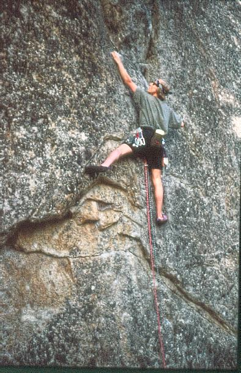
Externa Länkar
Kategori:Sva
Kategori:Jämtland
Kategori:Trad
Kategori:Sport
Kategori:Jämtland